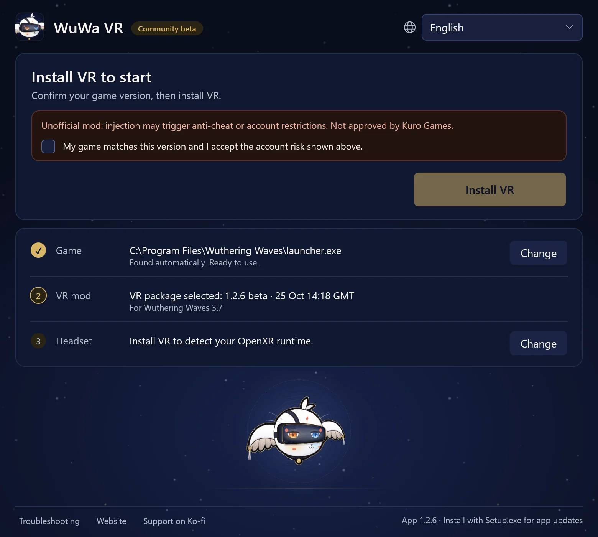
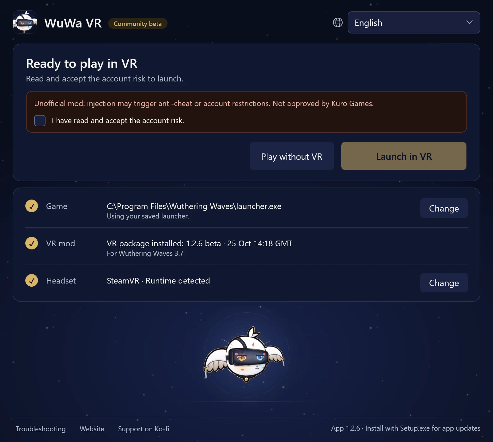

Community beta
Step into Wuthering Waves
A free, fan-made VR mod for Windows. Walk Solaris-3 at full scale with head tracking, a first-person body and controller shortcuts. Built on praydog's UEVR.

1.2.6 · Wuthering Waves 3.7
Watch it in VR
Real headset footage, recorded with the mod. The story videos are in 3D: open them in the YouTube app on your headset to see the depth.
She eats the apples mid-juggle 🍎 Wuthering Waves in VR (3D)No spoilers

A video loads from YouTube (youtube-nocookie.com) only when you choose it.
All videos and Shorts on YouTube@chronohax7186Show the 3.7 story videos (spoilers)
The whole 3.7 story in four parts, plus the finale in 25 minutes. Contains story spoilers.
The Wuthering Waves 3.7 finale in 25 minutes, in VR (3D)
I played the Wuthering Waves 3.7 story in VR (Part 1)
Suoming, up close in VR | Wuthering Waves 3.7, Part 2 (3D)
Face to face with Hsin in VR | Wuthering Waves 3.7, Part 3 (3D)
Wuthering Waves in VR: Part 4, the Waking Moon Festival (3D)


Install, then Launch in VR
The launcher is one screen: a headline that says what comes next, Launch in VR and Play without VR, then your Game, VR mod and Headset. Your choices are remembered, and no Python or other tools are needed.
Install
Run WuWa-VR-Setup.exe, then open WuWa VR from the Start menu. The first install of the VR mod needs internet.
Set up once
The launcher finds your Steam or official Kuro launcher copy of the game. Read the account-risk notice and select Install VR. Epic is not supported yet.
Launch in VR
Start your headset software, or choose the bundled simulator under Headset. Select Launch in VR and accept the Windows permission prompt; four plain steps show the way into VR.





Actual launcher screens, rendered from the app in English. Your paths and runtime will differ.
In game, L3 + R3 opens the WuWa VR menu. UEVR's full settings are on its Menu page: All settings (classic UEVR menu). Full setup, update and recovery guide
Made for playing, not just looking
Stereo VR, head tracking
Real depth in OpenXR headsets. Menus and HUD stay usable, and you can move, resize or hide the UI.
Controller first
Shortcuts for Xbox, PlayStation (experimental), VR controllers and the keyboard. Hold L3, or LT + RT, and a card shows what each button does.
First-person body
See your character's hands and outfit with the head hidden. Optional full-animation follow, with a comfort mode.
Free cameras
Freecam, drone, plane and acro viewpoints for exploring and screenshots. Experimental.
6DOF window
An optional window mode that places the game in your room. Adapted from Elliott Tate's work.
Both eyes match
Far trees, props and indirect lighting match in each eye, so the world reads as one scene.
First person, down to the idle animation
Look down and your character is there: hands, outfit and idle animations, at full scale. Hide the head bones and keep the body, or follow the full animation if you like a livelier view.
Record your own high-resolution clipsStep-by-step: first person, a clean frame and the built-in recorder.Controller shortcuts
Most shortcuts are L3 plus one button: click and hold the left stick, press the button, then let go of everything. In VR, hold L3, or LT + RT, for half a second and this card rises under your view.

- LTPortal window
- LBHUD / mouse mode
- ViewFirst person
- D-pad ↓First person: full animation
- RTDiorama (10×)
- RBGame / fixed camera
- MenuKeep this card open
- Y/XCamera up / down
- BShow / hide game UI
- ARecenter view
- R3WuWa VR menu
Gestures
- R3×2Freecam
- L3×2Screenshot
- LT+RT→R3Click: full VR / stereo screen
- LT+RT→R30.8 sHold: mono theatre on / off
- LT+RT→L3Click: blur on / off
- LT+RT→YPress: hide characters at your eyes
chronohaxx.github.io/wuwa-vr
PlayStation support is experimental.
Questions
Which headsets work?
WuWa VR uses OpenXR. It has been played on a Bigscreen Beyond through SteamVR, and on a Quest Pro through SteamVR and through Virtual Desktop, with an Xbox controller. Other OpenXR headsets should work too. The bundled simulator lets you try it on a flat screen.
Steam, Kuro launcher or Epic?
Steam and the official Kuro launcher are supported. Epic is not supported yet.
Can my account be restricted?
Yes, it is possible. The mod injects into the game and anti-cheat may detect it. Kuro Games has not approved it. Read the risk notice before you install.
Windows warns about the installer. Is that expected?
The installer is not code-signed, so SmartScreen may warn. Download only from the project's GitHub release and compare the SHA-256 checksum. Never disable antivirus or anti-cheat.
How do updates work?
The app checks for its own updates and asks before restarting. When it starts with the game closed, a newer VR package for your game version installs by itself, and Use previous installed version under Troubleshooting → More options returns to the one you had.
Does it change my game files?
No. The launcher leaves game files alone; the VR mod is injected when you launch.
How do I uninstall?
Use Troubleshooting → More options → Prepare uninstall in the app, then remove WuWa VR in Windows Settings → Apps. Your UEVR settings go back to how they were before the mod; backups and recordings are kept unless you delete them.
Is it free?
Yes. It is a free fan project and the launcher is MIT open source. Support on Ko-fi is optional and buys no guarantees.
Known limitations
- Some scene and dialogue loads can stall, and flat menus may show a moving background.
- HUD-aspect refresh is unreliable; some NPC lighting, reflections and fog still need testing.
Open source, checkable downloads
The desktop launcher is MIT open source and our mod changes are public. Every release ships matching source and SHA-256 checksums.
Built on community work
WuWa VR stands on work by praydog and the UEVR contributors, mirudo2 (polar), SannpoKun, Indath, endlessfalls and Elliott Tate.
Credits and licensesSupport on Ko-fiHelp improve the project